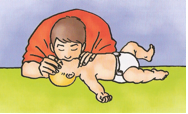
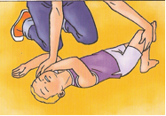
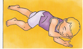

ERSTE HILFE BEI BABYS + KINDERN
Die richtigen Regeln für das richtige Verhalten in Notfällen!
| Nicht alle Unfälle von Kindern lassen sich vermeiden, deshalb sollten Sie als Eltern wissen, was Sie in einer solchen Situation tun müssen, um Ihrem Kind zu helfen. Sie sollten auch beurteilen können, wann es sinnvoll ist, zum Kinderarzt zu gehen und in welchen Fällen der Weg ins Krankenhaus oder der Anruf beim Notarzt notwendig wird. |  |
|  | Die zwei Kurseinheiten sollen Sie dabei unterstützen und Ihnen Sicherheit im Umgang mit Notfällen geben. Trotz aller Gelassenheit, die Sie Ihrem verletzten oder krankem Kind vermitteln sollten, müssen Sie in der Lage sein, den Grad der Verletzung oder der Krankeit richtig einzuschätzen und schnell zu handeln. |
| Die zwei zusammenhängende Kurseinheiten kosten 65€ für ein Elternteil und 90€ für beide Eltern. Ihnen wird auch ein Buch sowie eine Dokumentation mit Illustrationen ausgehändigt. |  |